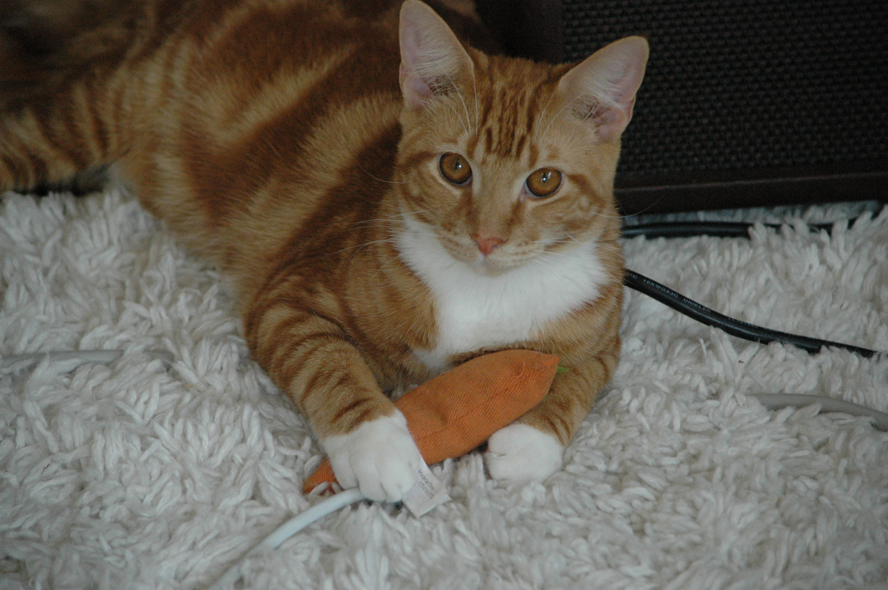
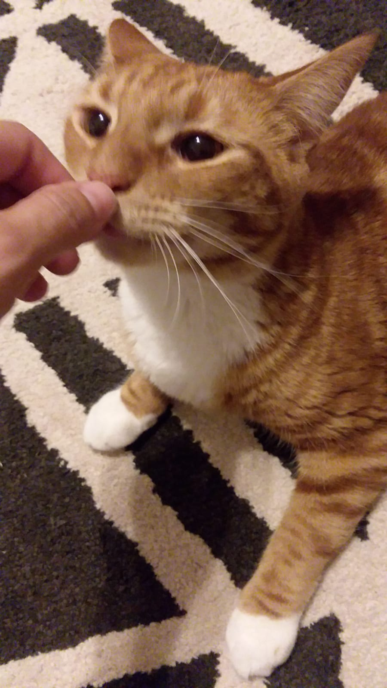
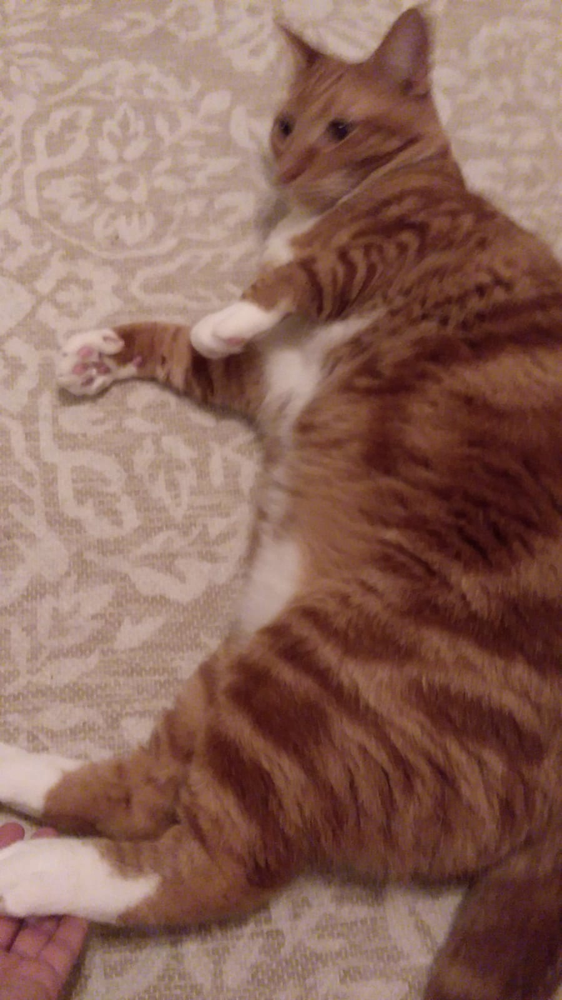
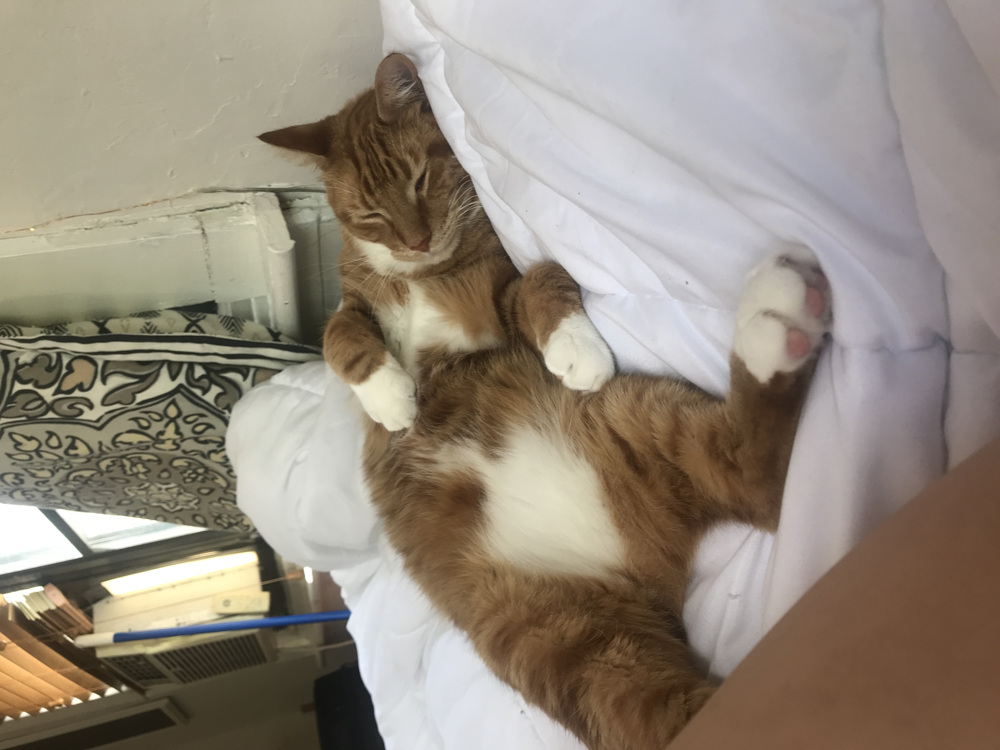
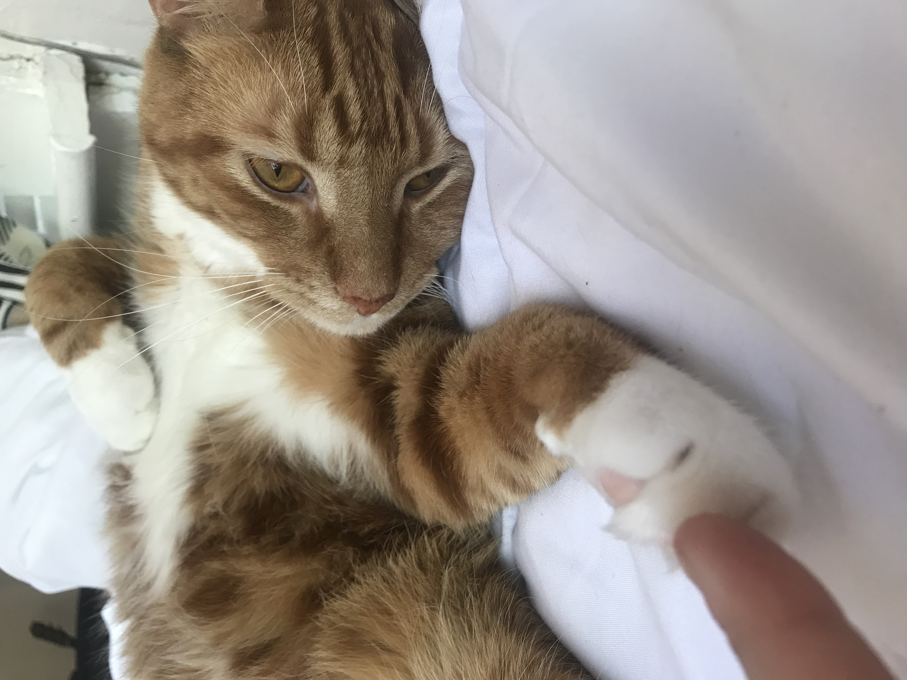

How to Pet a Cat Correctly

Preface
Cats are not all alike. They are very tempermental animals and the amount you put them
can also affect the reaction you may recieve. The title this article could also
be interpreted as "How I have pet my cats and gotten away without being bitten or Scratched". Please
pet your cat with care and with safety precautions (when avaliable).
Step 1
First step is to find your cat. If you own one this step is a lot easier
(typically they dwell under your bed, in your cabinets or boxes, or they
can even follow you around!). If you do not own a cat you can find one right
outside of the University of Miami Weeks Music Library (his name is Bully)! If you
do not go to the University you can also find stray cats all over Miami in the
bushes and around peoples homes.
Step 2

Wait for the cat to approach you. They love treats or if they are trained
they can come if you say their name (side note: if you cat is under the bed
do not pet them, they get aggitated).
Step 3

Cats like to be pet in the direction that their fur goes; typically away
from the head and towards the tail. Do not pet them all in the same area
and make sure to get their neck and behind their ears!
Step 4

When a cat wants you to pet them they typically lounge around you as well!
If you are sitting down or laying in bed they normally like to come up and get
pet while you both relax. That being said, step 4 is to make sure not to pet them
while they are asleep or on their back. Cats do not like it when you pet their
stomachs at all and a surprise pet will also make them upset if they do not want it.
Step 5

The final thing is just to make sure they are doing okay when you do it,
your cat loves you and deserves a good pet every so often. Pet their back and
I am sure you will be okay. Cats love attention either way, and will be purring in
no time!